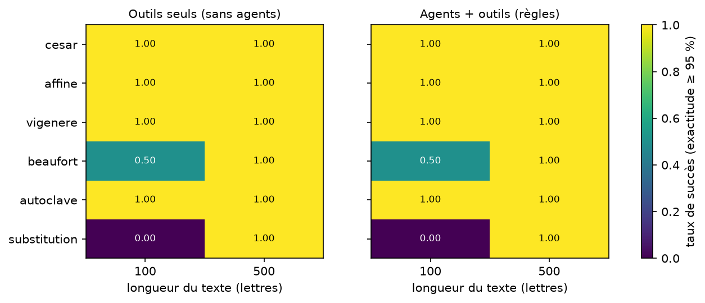
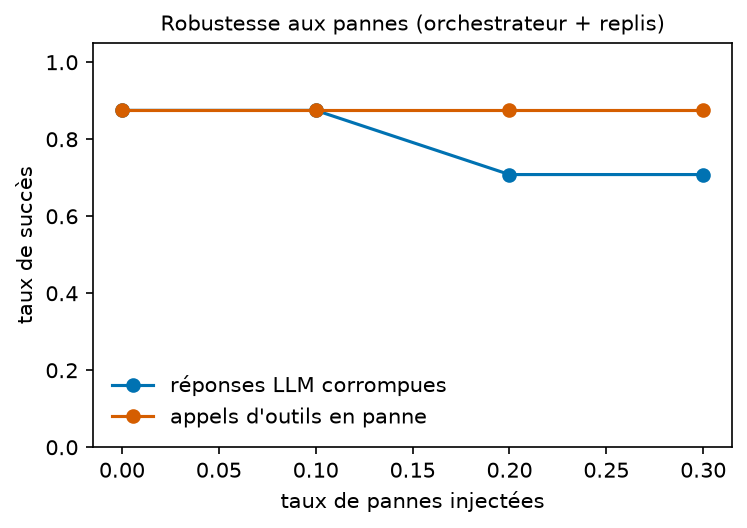
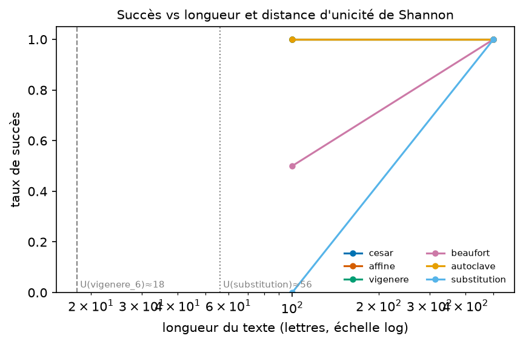

Version 1.0.0 · corpus sha256 a2d1ca0d18c449f0… · 24 échantillons × 1 répétitions · profil small.
Succès = texte retrouvé à ≥ 95 % de lettres exactes. Toutes les valeurs proviennent de results/metrics.json.
| 100 | 500 | |
|---|---|---|
| affine | 100 % | 100 % |
| autoclave | 100 % | 100 % |
| beaufort | 50 % | 100 % |
| cesar | 100 % | 100 % |
| substitution | 0 % | 100 % |
| vigenere | 100 % | 100 % |
| 100 | 500 | |
|---|---|---|
| affine | 100 % | 100 % |
| autoclave | 100 % | 100 % |
| beaufort | 50 % | 100 % |
| cesar | 100 % | 100 % |
| substitution | 0 % | 100 % |
| vigenere | 100 % | 100 % |
| 200 | |
|---|---|
| affine | 0 % |
| autoclave | 0 % |
| beaufort | 0 % |
| cesar | 0 % |
| substitution | 0 % |
| vigenere | 0 % |



{
"python": "3.11.18",
"plateforme": "Windows-10-10.0.26300-SP0",
"cpu_count": 14,
"ram_go": 15.4,
"modeles_llm": {
"petit": {
"modele": "qwen3:0.6b",
"digest": "7df6b6e09427a769808717c0a93cadc4ae99ed4eb8bf5ca557c90846becea435",
"temperature": 0.0,
"num_ctx": 4096
}
}
}